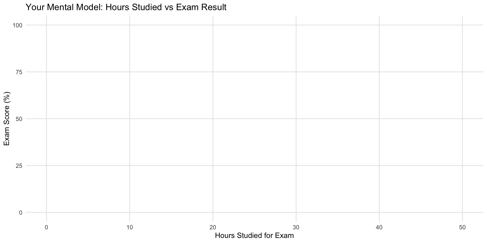
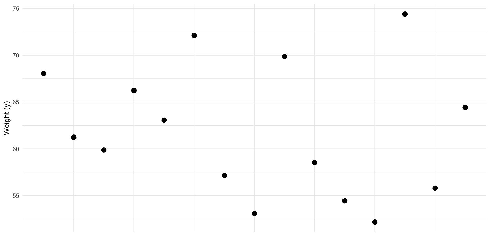
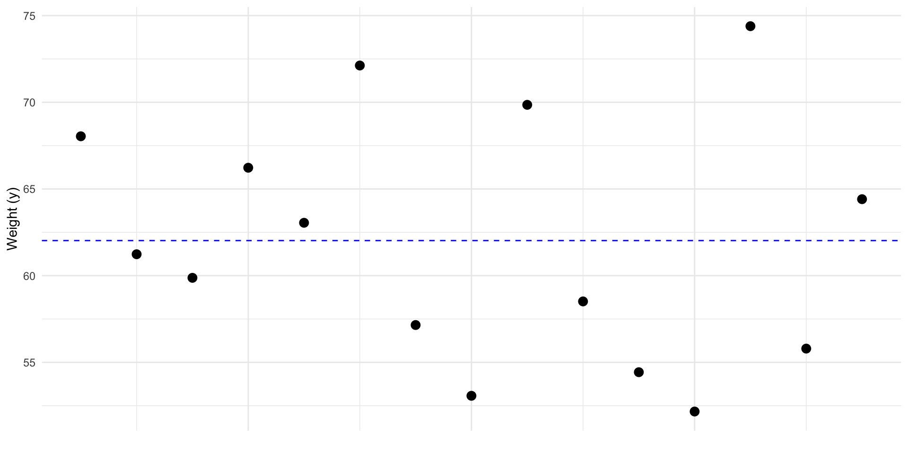
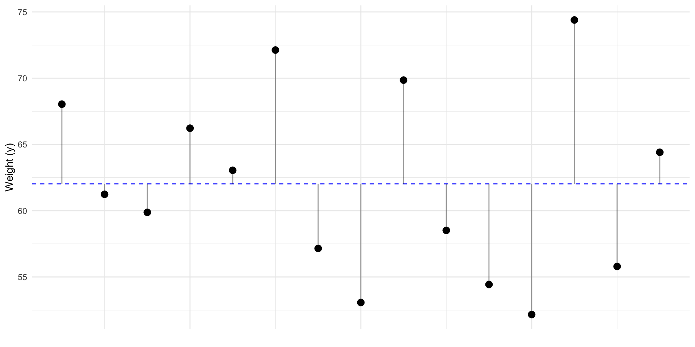
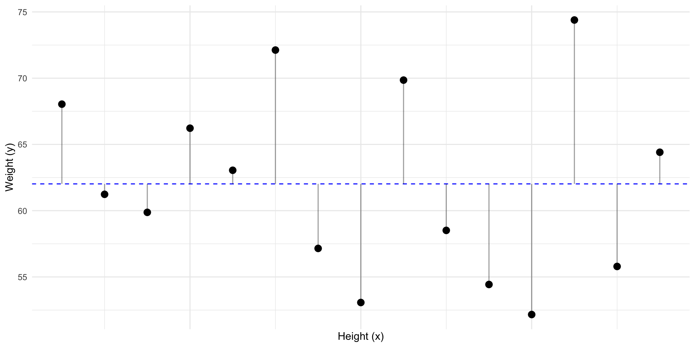
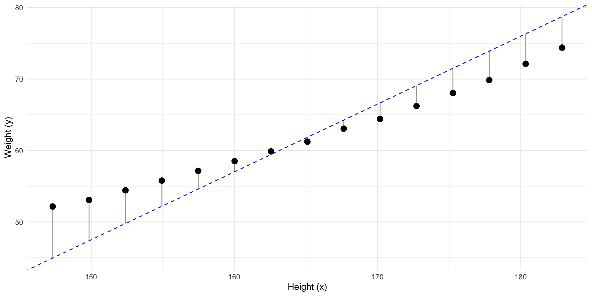
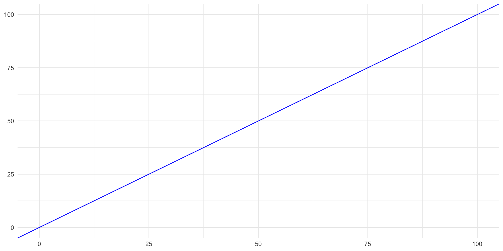
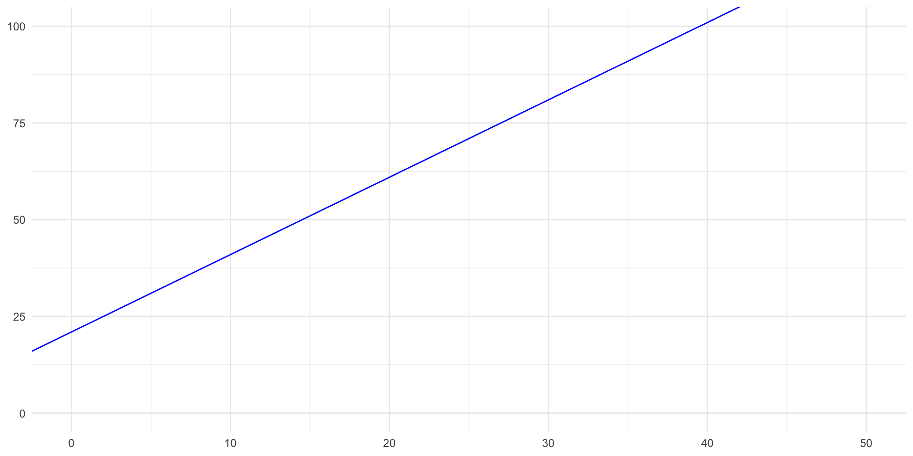
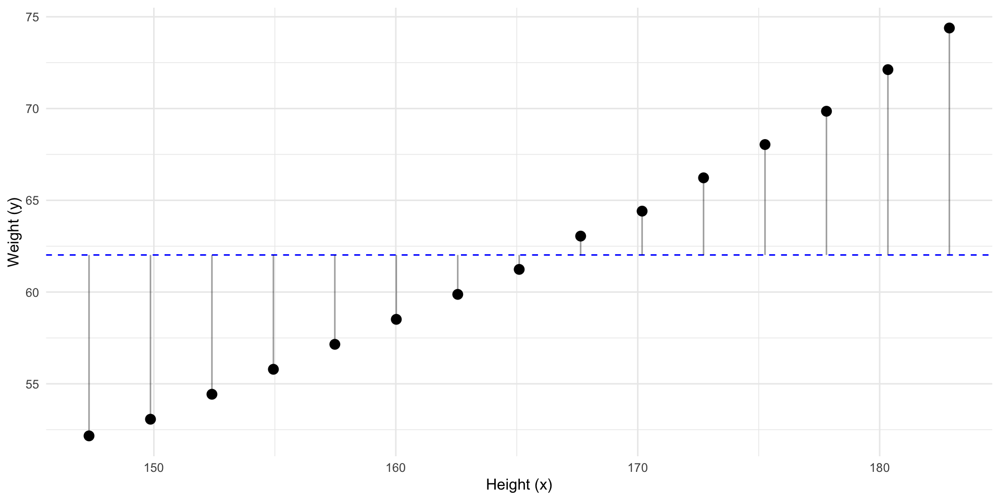
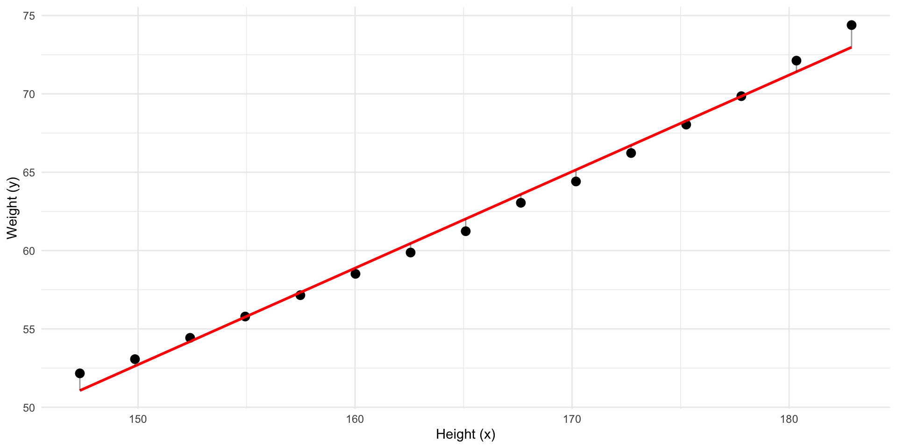

Week 1: Introduction to OLS Regression
Jesper Lindmarker
How did you find the previous course?
Week 1: Introduction to OLS Regression
🎓 Welcome to Week 1
Course: Statistics and Data Science II
Focus: Associations, regression, interpretation, and model intuition
🔍 Associations
- 🤔 Today we’ll start with associations. What does it mean?
- 🧠 Much of social science begins with a hypothesis about associations in the world:
- Between 🎓 education and 💰 income, 📱 screen time and 😊 well-being, ⚧ gender and 💭 attitudes, or ⏱️ study time and 🧾 exam performance.
- ❤️ To make the content of this course meaningful, you need to connect it to your own interests.
- What associations interest you? Take 1 minute to think ⏰.
✏️ Drawing Exercise
I want you to think about the association between hours studied and exam results for SDS-I.
- 📝 Task: On paper, sketch a scatterplot (points) of how you think these would be associated for you.
- The x-axis is the number of hours you studied for the SDS-I exam,
- The y-axis is your percentage of correct answers on the exam.
Associations

💬 Discussion
- How would you describe your sketched association?
- If you would connect your points, what is the shape of the line?
What Are We Really Asking?
- Would I have done better if I had studied more?
- Would someone else have done worse if they had studied less?
- Does studying cause better performance?
The Problem of the Missing Reality
We can imagine two possibilities for each student:
\[ Y_i(1) = \text{Exam score if student } i \text{ studies more} \] \[ Y_i(0) = \text{Exam score if student } i \text{ studies less} \]
These are called potential outcomes.
The Fundamental Problem of Causal Inference
For each student, we only observe one outcome:
- We see what happened, not what could have happened
- This missing data problem is what makes causality hard
- We cannot observe both \(Y_i(1)\) and \(Y_i(0)\).
So What Can We Do?
We can collect observed data:
- How many hours each student studied
- Their actual exam results
- From this we can look for patterns across individuals
→ This is the domain of statistical modeling
You Already Made a Hypothesis
Earlier you imagined your own points of potential outcomes on a scatterplot.
Put together, these plots form a collective hypothesis about the relationship between:
- Study time
- Exam performance
- The next task would be to test it with data.
What is Regression?
Regression is a way to model the relationship between variables.
- Predict an outcome (
Y), often called the dependent variable. - Use one or more predictors (
X), often called our indepedent variable(s) - We can use it to make predictions 🎯
Predict y
Given this data. What’s our best prediction of a new \(y_i\)?

Predict y
The best prediction for a new \(y\), is the mean: \(\bar y\). In other words \(\widehat y = \bar y\)

Predict y
So how “wrong” would we be if we had predicted \(\bar y\) for every \(y_i\)?

Predict y
These “errors” are called residuals (\(residual_i = y_i - \widehat{y}_i\))

Predict y
Given no other information, guessing \(\bar y\) minimizes the residuals.

Predict y
But, what if we have some other information?

Predict y
Can we make a better prediction of \(y\) using \(x\)?

Predict y
If we sort by that information…

Predict y
Can we improve our best guess of \(y\)?

Predict y
Can we draw a straight line with less residuals?

Predict y
Can we draw a line with less residuals?

Predict y using x
Better! But what line has the least residuals?

Predict y using x
This line has the least residuals. It’s a regression line.

Predict y using x
We have fitted a model to our data.
- The model predict \(y\) using \(x\)
- This means that if we know a \(x\) we can calculate the model’s prediction of \(y\)
- It’s a representation of the association between the variables in our data.
- Currently it’s in the form of a straight line equation
The straight line equation
\[ y = a + b \cdot x \] Where:
\(a\) is the intercept
\(b\) is the slope
A Simple Example
\[ y = 0 + 1 \cdot x \]
- If \(x = 2\), then \(y =\)?
- \(2\)
- If \(x = 10\), then \(y =\)?
- \(10\)

Another
\[ y = 21 + 2 \cdot x \]
- If \(x = 0\), then \(y =\)?
- \(21\)
- If \(x = 10\), then \(y =\)?
- \(41\)

Our Model Equation
\[ \widehat{y} = -39.7 + 0.62 \cdot x \]
- If \(x = 160\), then \(y = ?\)
- \(y = 58.5\).
- If height increases by 1 cm, how much would predicted weight increases by?
- \(0.62kg\)
- The slope tells us how \(y\) changes when \(x\) increases by one unit.
- What would be the predicted weight of someone with \(0\) height?
- \(-39.7kg\)

Our Model Equation
Call:
lm(formula = weight ~ height, data = women)
Residuals:
Min 1Q Median 3Q Max
-0.7862 -0.5141 -0.1739 0.3364 1.4137
Coefficients:
Estimate Std. Error t value Pr(>|t|)
(Intercept) -39.69694 2.69296 -14.74 1.71e-09 ***
height 0.61610 0.01628 37.85 1.09e-14 ***
---
Signif. codes: 0 '***' 0.001 '**' 0.01 '*' 0.05 '.' 0.1 ' ' 1
Residual standard error: 0.6917 on 13 degrees of freedom
Multiple R-squared: 0.991, Adjusted R-squared: 0.9903
F-statistic: 1433 on 1 and 13 DF, p-value: 1.091e-14Let’s stop and summarise
With a regression, we can describe a pattern between variables in our data — like height and weight — using a mathematical model, like a straight line.
- We have quantified an association.
- This might represent some “real” association in the “real” world.
What is our assumed model?
But the real-world is messy:
- Two people with the same height might weigh different amounts.
- There are many factors we don’t measure or can’t explain.
- Our data might be off.
- It is why we get residuals
We can write this as an assumed model:
\[ Y_i = \beta_0 + \beta_1 X_i + \varepsilon_i \]
Understanding the model
\[ Y_i = \beta_0 + \beta_1 X_i + \varepsilon_i \]
- \(Y_i\) and \(X_i\) are random variables (population level)
- \(\beta_0 + \beta_1 X_i\): the systematic part — recognize the straight line?
- \(\varepsilon_i\): the unsystematic part — the error.
From Model to Prediction
From our sample, we estimate:
\[ \widehat{y}_i = \hat{\beta}_0 + \hat{\beta}_1 x_i \]
- \(x_i\): observed weight for individual \(i\)
- \(\widehat{y}_i\): our predicted height for individual \(i\)
- \(\hat{\beta}_0\): estimated intercept. \(\hat{\beta}_1\): estimated slope.
- \(r_i = y_i - \widehat{y}_i\): the residual — how far off our prediction was
To summarize
Observed Data: \((x_i, y_i)\) — what we actually see
Assumed Model: \(Y_i = \beta_0 + \beta_1 X_i + \varepsilon_i\)
- includes error \(\varepsilon_i\) (unknown, unobserved)
Fitted Model: \(\widehat{y}_i = \hat{\beta}_0 + \hat{\beta}_1 x_i\)
- produces residuals \(r_i = y_i - \widehat{y}_i\) (known, measurable)
So:
- The assumed model is a hypothesis about how \(Y\) might relate to \(X\)
- The fitted model describes the data and “fits” the model
- Residuals ≠ Errors — but both reflect imperfect predictions
How Good Is Our Fit? Or, goodness of fit
How much better is our model than just guessing the mean?
- Remember the “guessing” we did using only \(y\)?
- We use that as the total sum of residuals to “explain”, or the total variance to explain.
- Then we compare that to the sum of residual amount of residuals in our model.


Squared Residuals
Remember, this is how we defined residuals: \(r_i = y_i - \widehat{y}_i\)
However, when we compare models, we use squared residuals: \(r_i^2 = (y_i - \widehat{y}_i)^2\)
- It makes all values positive
- Penalized large errors more (\(4^2 = 16\) is way worse than \(2^2 = 4\))
- Optimization becomes easier.
Sum of Squares
We add up (sum) all of the now squared residuals from the baseline model: \(\sum (y_i - \bar{y}_i)^2\)
Then we sum the squared residuals from our model: \(\sum (y_i - \widehat{y}_i)^2\)


Sum of Squares
- Baseline model: \[ \text{Total Sum of Squares (TSS)} = \sum (y_i - \bar{y})^2 \]
- The model: \[ \text{Residual Sum of Squares (RSS)} = \sum (y_i - \widehat{y}_i)^2 \]
- Share of total variance explained by our model (\(R^2\)): \[ R^2 = 1 - \frac{\text{RSS}}{\text{TSS}} \]
Introducing \(R^2\)
We define:
\[ R^2 = 1 - \frac{\text{RSS}}{\text{TSS}} \]
- \(R^2\) is the proportion of variation explained by the model
- Always between 0 and 1:
- \(R^2\) = 0: model is no better than just guessing the mean
- \(R^2\) = 1: perfect prediction
Regression constellations

OLS - Ordinary Least Squares
- What we have discussed is commonly called OLS regression
- It estimates parameters with the “least squares”
- In other words: OLS finds the line that minimizes the sum of squared residuals.
But When Is This Valid?
We’ve learned:
- How to fit a regression line
- How to interpret it
- How to evaluate its fit using \(R^2\)
But regression only works well if certain conditions are met.
These are the assumptions of OLS.
OLS Assumptions
OLS Assumption 1: Linearity
- The linearity assumption means that the expected value of Y is a linear combination of known functions of the predictors.
- The model must be linear in the parameters, but not necessarily in the raw variables.
✅ Valid: \(Y = \beta_0 + \beta_1 X + \beta_2 X^2\)
❌ Invalid: \(Y = \beta_0 + \sin(\beta_1 X)\)
- ⚠️ What might cause violations: model misspecification or omitted variables that introduce non-linear structure in the residuals.
- 🔧 Try adding polynomial terms, more controls, interactions, or transforming variables.
OLS Assumption 2: Independence
- Observations must be independent of one another.
- If observations are related as in repeated measures, grouped/clustered data (e.g., students in schools), or time series, then standard errors will be incorrect.
- ⚠️ What might cause violations: clustered designs, panel or time-series data, or spillover effects where one observation influences another.
- 🔧 Use cluster-robust SEs, multilevel models, or time-series adjustments.
OLS Assumption 3: Constant Variance (Homoscedasticity)
- The spread of residuals should be roughly constant across all levels of X.
- If the spread increases or decreases, the model errors are heteroscedastic.
- 🔍 Check using residual vs. fitted plots — funnel shapes = violation.
- ⚠️ What might cause violations: omitted variables that affect variance (e.g., income level affecting outcome variability), or scale effects where larger values have naturally larger errors.
- 🔧 Use robust SEs or transform Y (e.g., log-scale).
OLS Assumption 4: Normality of Errors
- The residuals should be approximately normally distributed.
- This matters most in low-n studies when making inferences (e.g., confidence intervals, hypothesis tests).
- 📈 Use a histogram or Q–Q plot of residuals to check.
- 🧪 Doesn’t affect point estimates, but does affect statistical tests.
- ⚠️ What might cause violations: outliers, skewed dependent variables, or incorrect functional form.
- 🔧 Consider trimming outliers, or change functional form.
Summary: OLS Assumptions
- Linearity: Relationship can be expressed with linear predictors
- Independence: Observations are unrelated
- Homoscedasticity: Equal spread of residuals
- Normality: Residuals follow a normal distribution (low \(n\))
OLS is robust to mild violations, especially in large samples — but you should know how to diagnose and how they affect interpretation.
We’ll revisit these in the lab later.